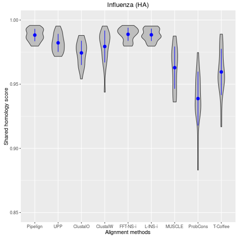
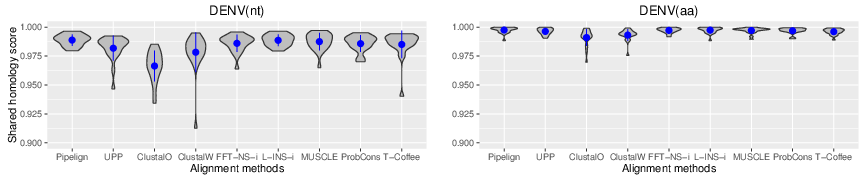
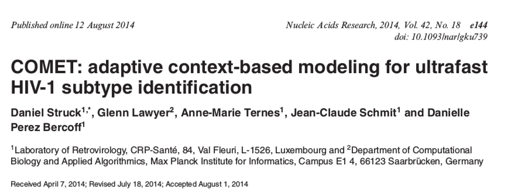
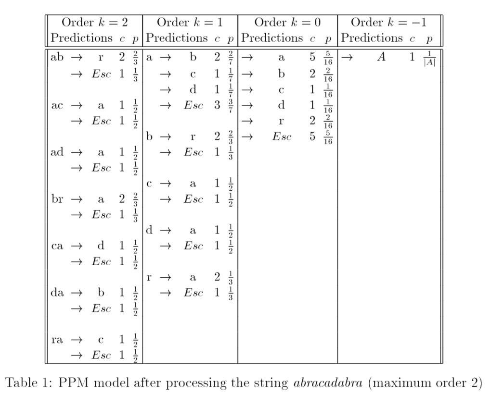
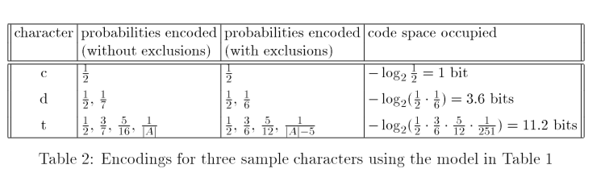
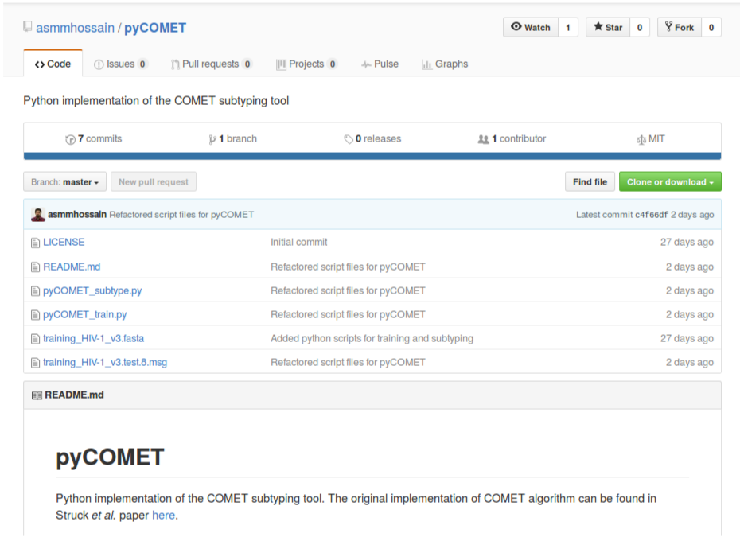
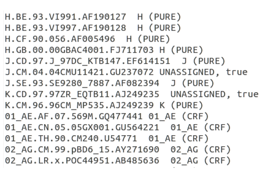
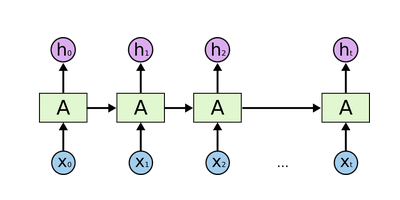

Subtype classification using lossless compression techniques
Mukarram Hossain
Department of Veterinary Medicine
University of Cambridge
LVZ Retreat, 2017

Lossless compression
Lossless compression is a class of data compression algorithms that allows the original data to be perfectly reconstructed from the compressed data.
Subtype classification
- Viruses are often grouped into subtypes.
- Subtypes have wide implications on the following studies of viruses:
- clinical
- epidemiological
- structural
- functional
- Existing classification techniques mostly rely on alignments followed by phylogenetic and/or statistical algorithms.
Alignment uncertainty - 1

Alignment uncertainty - 2

Alignment-free classification
- Lossless compression techniques have shown promising results for biological sequence classification:
- Begleiter et al. (2004)
- Ferragina et al. (2007)

COMET
- COMET is an ultrafast alignment free subtyping tool
- Uses Prediction by Partial Matching (PPM)
- Initially designed for HIV-1
- COMET was tested on both synthetic (1090698) and clinical (10625) HIV datasets
- Sensitivity and specificity were comparable to or higher than:
- REGA (de Oliveira et al., 2005) and
- SCUEAL (Pond et al., 2009)
- Detected and identified new recombinant forms
PPM - model

PPM - likelihoods

COMET algorithm
- Builds variable-order Markov models for each reference sequence
- Given a query, COMET calculates log likelihood of observing a base at each positions
- This results in a matrix of likelihood values
- Subtype call is done using a decision tree
The decision tree

COMET - availability
- COMET is free to use via an online interface
- Stand-alone Java jar file can be requested from the author via daniel.struck@lih.lu
pyCOMET

pyCOMET - results

Classification using Neural networks
- Neural networks are computational system mimicking biological brain
- Consists of a cluster of neural unit organised in layers

Classification using RNN
- Recurrent neural networks are networks with connections so that information can persist

Classification using lossless compression
- "More accurate and more reliable" and "faster" than current best methods.
- Robust, capable of identifying rare and novel recombinant forms.
- Results are consistent on short segments as well as whole genomes.
- Do not rely on alignments hence not biased by alignment uncertainty.
- Depends solely on the availability of complete reference sequence set
Plans for 2017